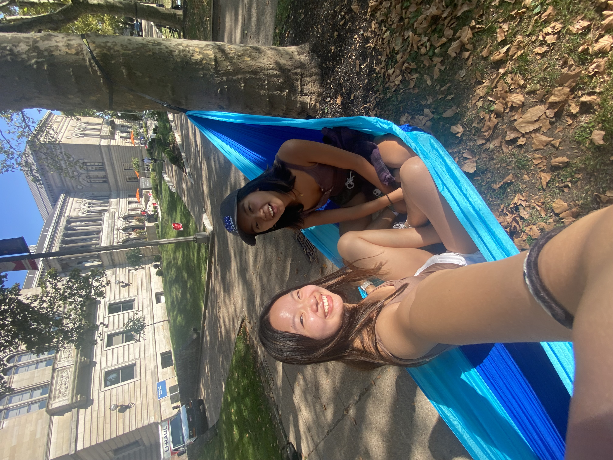
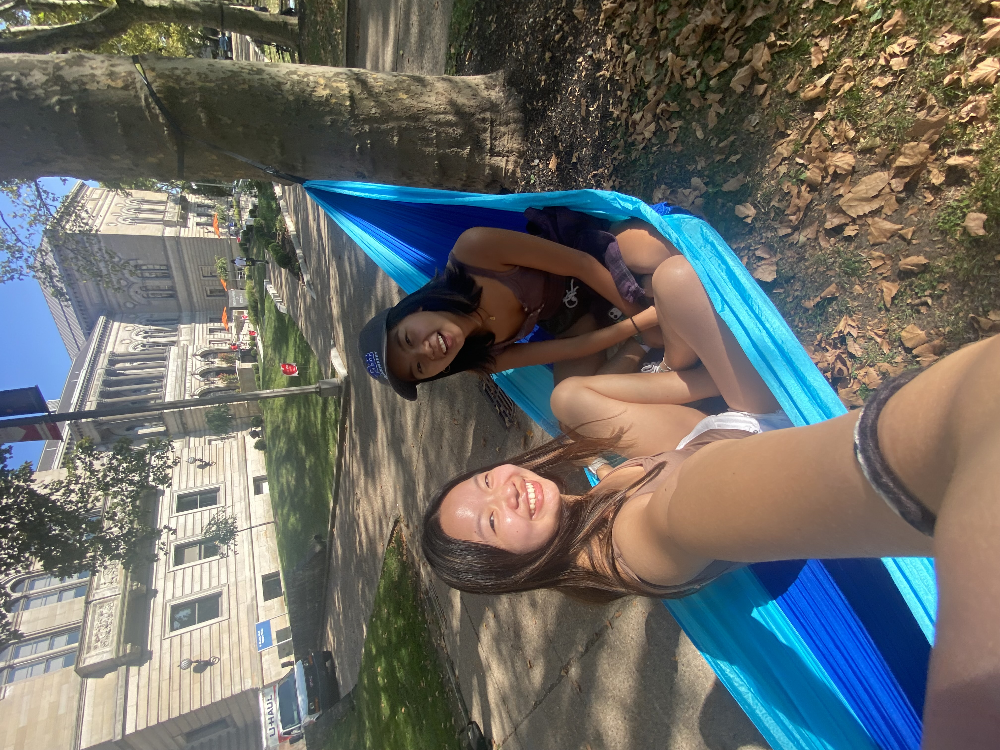
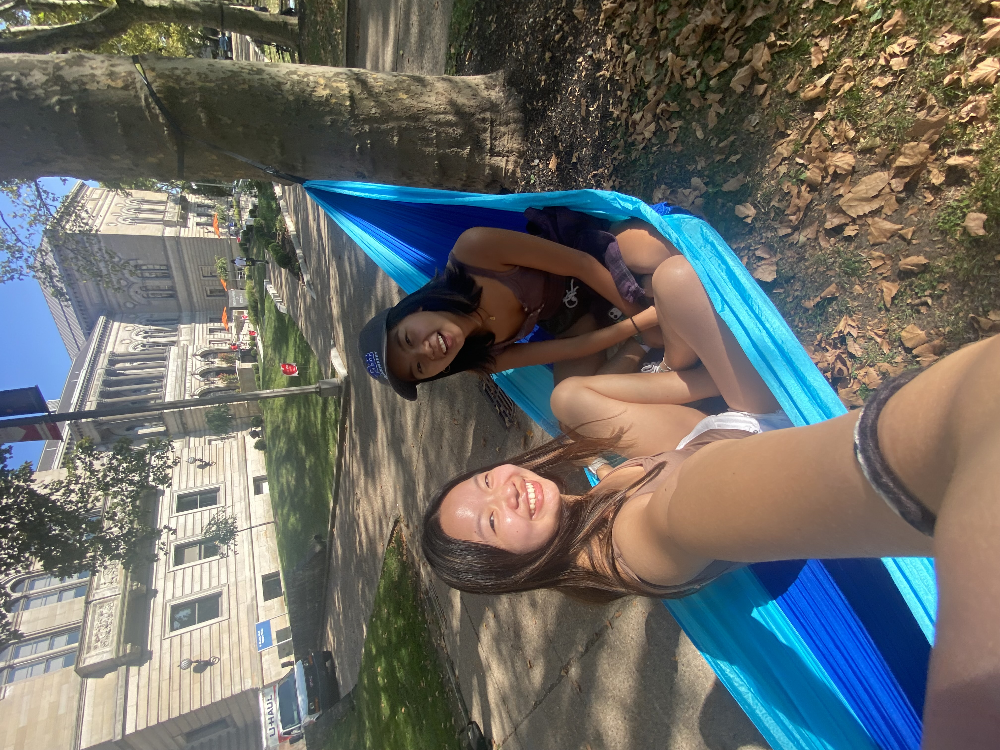

I completed my first year at the University of Delaware as a Computer Science major before transferring to the University of Pittsburgh to start my second year. I am now in my third year of college, pursuing a Digital Narrative & Interactive Design major with a Computer Science minor. Transferring allowed me time to reflect on my year and whether I wanted to continue in the Computer Science field. I realized that while I enjoyed coding, problem solving, and creating projects, I did not want to be just a programmer. Instead, my interests are more aligned in the design process of making and communicating. I decided to pusue DNID because of this emphasis on interaction between digital technology and humans.
The class I have enjoyed most so far is Narrative and Technology which covered various media and analyzed how a narrative's medium affects the story that is told. From that class, I found interfaces, interactive webtexts, and video games to be most interesting. Currently, I am enrolled in Interactive Literature and DNID (the class) where I look forward to both analyzing works of interactive media and designing my own.
I have some experience with Adobe software, like Photoshop and Audition, from previous design classes. Additionally, I have coding experience in languages including Python, Java, C, and HTML. I enjoy projects that incorporate elements of coding with design, such as websites and interactive stories, and am interested in how interactivity can influence user experience. I look forward to learning other skills in this class as well, including Special Effects and Animation in Adobe.

I went canoeing on the Brandywine River this summer.
I enjoy reading books, playing board games, completing puzzles, and writing/sending letters. I collect CDs, records, and books. In general, I am into physical media. I think it is interesting how often physical media becomes obsolete in the face of newer or faster digital technologies and, as a lover of old things, I wonder why newer is often assumed to be better. I would be interested in doing a project on this subject. Potentially questioning where physical media stands in a mostly digital world and if/how digital and physical media may interact, maybe honing in on certain media in particular.

After school, I would be interested in doing web design, UX design, or creating other interactive media to connect to my interests in coding and design. I hope many of the projects I work on in school will build my experience and portfolio as well as help to narrow exactly what kind of work I want to do.
generated by Pitt Fuego
Why make a spark when you can light a fire?